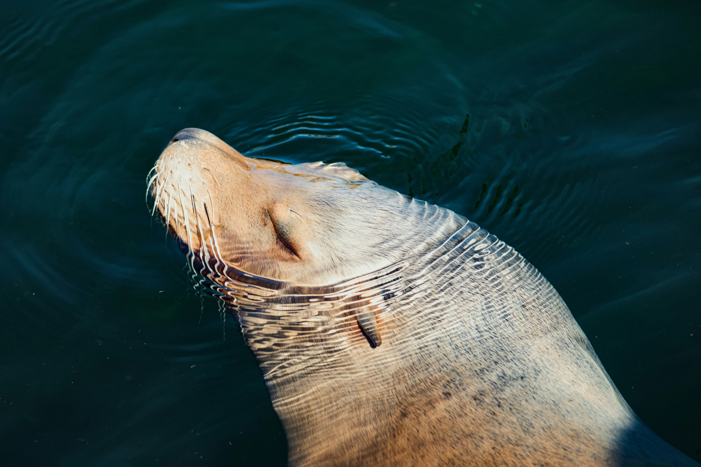
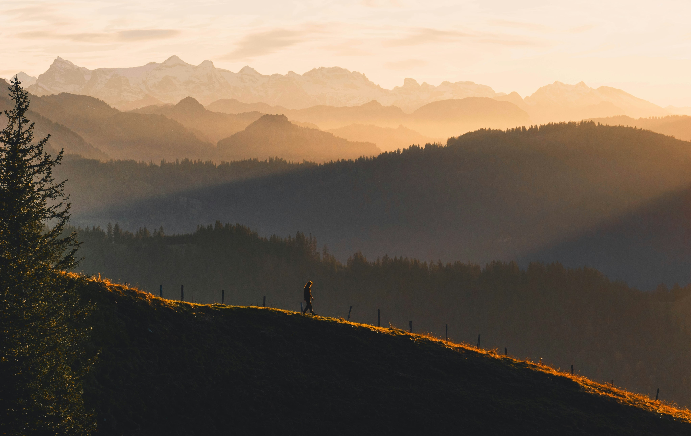

Galería Fotográfica
Gran Cañon
Las capas más antiguas del Gran Cañón tienen más de 2 mil millones de años.

Foca
Algunas especies de focas pueden dormir mientras nadan.
Desierto
El Sáhara fue fértil hace miles de años, con lagos y vegetación.
Camping
Acampar en la naturaleza mejora el ritmo circadiano.
Italia
Italia tiene más sitios UNESCO que ningún otro país.

Hiking
El senderismo puede mejorar la memoria y la concentración.